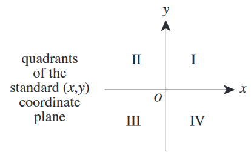

The quadrants of the standard \((x,y)\) coordinate plane are shown below. The vertices of \(\triangle{ABC}\) are \(A(-3,3)\), \(B(-3,1)\), and \(C(-1,1)\). The triangle is translated by \(x'=x+5\) and \(y'=y-2\). The image of \((x,y)\) on \(\triangle{ABC}\) is \((x',y')\) on \(\triangle{A'B'C'}\). The vertices of \(\triangle{A'B'C'}\) lie in which quadrant(s)?
